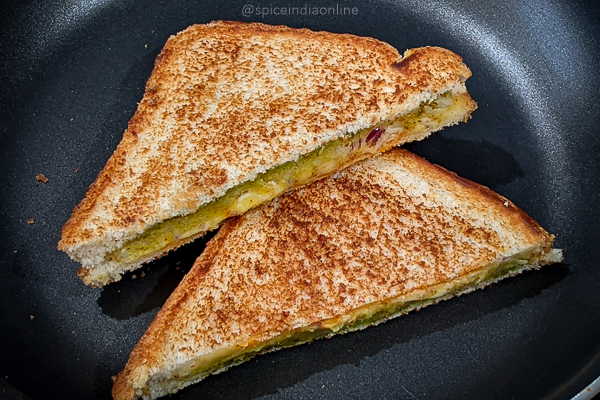
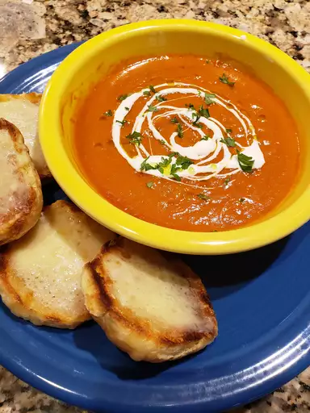
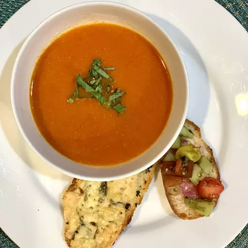

Description:
We're doing a very fresh twist on the classic cream of tomato soup with a grilled cheese sandwich. Since we're using fresh tomatoes at their peak of vine-ripened goodness, this simple soup is going to be not quite, but almost, 100% tomato. You can find out more on Allrecipes.
Duration:
Prep Time: 15 mins Cook Time: 55 mins Total Time: 1 hr 10 mins Servings: 4
Prep Time: 15 mins Cook Time: 55 mins Total Time: 1 hr 10 mins Servings: 4
Ingredients:
Tomato Soup:
- 3 ½ pounds vine-ripened tomatoes
- 4 tablespoons unsalted butter
- 2 tablespoons olive oil
- 2 cloves garlic, minced
- 1 anchovy fillet
- 1 teaspoon salt, or to taste
- 1 pinch red pepper flakes (Optional)
Cheese Toast:
- 2 tablespoons olive oil
- 8 slices Italian bread
- ¼ cup thinly sliced basil leaves
- 6 ounces shredded sharp white Cheddar cheese
Steps:
- Prepare the tomato soup: Remove cores from tomatoes and cut in half crosswise. Reserve until needed.
- Heat butter and olive oil in a saucepan over medium-high heat. Add garlic and anchovy and cook until garlic is sizzling in the hot fat, 45 seconds to 1 minute. Carefully add tomatoes with their juices, salt, and red pepper flakes. Toss with a spoon every few minutes until tomatoes release their liquid and start to break down.
- Once tomatoes have softened and started to collapse, reduce heat to medium-low and cook, stirring occasionally, until tomatoes have fallen apart and the soup resembles a coarse tomato sauce, about 45 minutes.
- Meanwhile, prepare the cheese toast: Preheat the oven to 450 degrees F (230 degrees C). Line a baking sheet with foil or a silicone liner. Drizzle with 2 tablespoons olive oil.
- Place bread slices on the prepared baking sheet. Top each slice with sliced basil, and then Cheddar cheese.
- Bake in the preheated oven until the cheese is well browned and crispy around the edges, 15 to 20 minutes. Let cool to room temperature.
- Remove soup from heat and pass through a mesh strainer into a bowl. Use the back of a ladle to push all the tomato mixture through. Discard the skins and seeds, which should be the only things left in the strainer.
- Transfer the strained tomato soup back into the saucepan and place back over medium-low heat. Continue cooking to thicken slightly, if desired, or simply bring back to a simmer and serve immediately with the cheese toasts.
- Thats it your tasty dish is now ready to eat!!!


